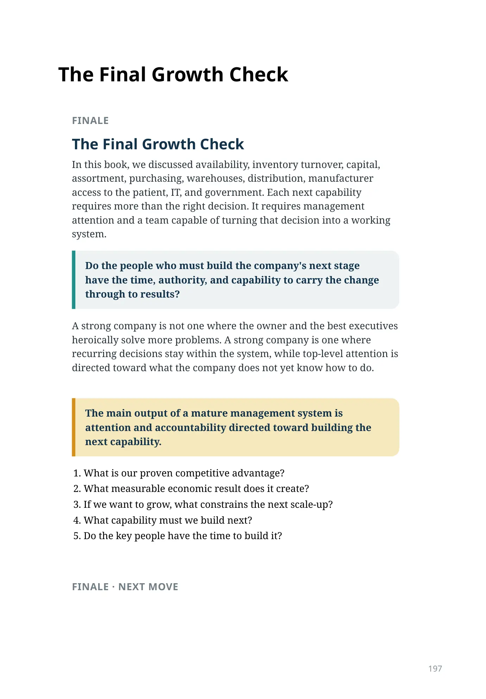
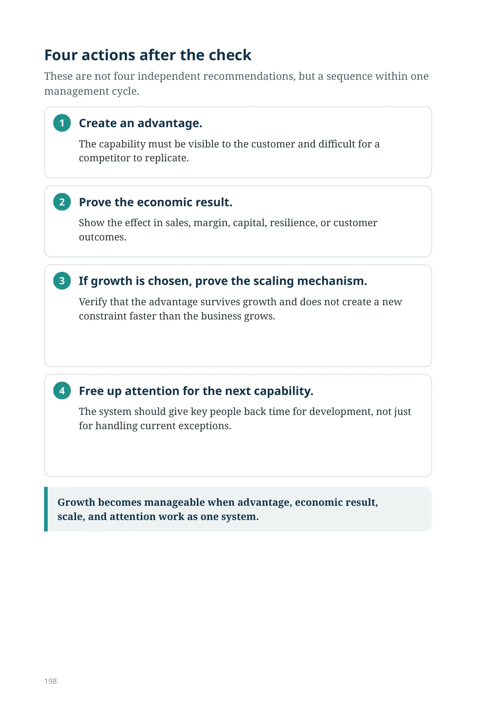

The Final Growth Check
FINALE
The Final Growth Check
In this book, we discussed availability, inventory turnover, capital, assortment, purchasing, warehouses, distribution, manufacturer access to the patient, IT, and government. Each next capability requires more than the right decision. It requires management attention and a team capable of turning that decision into a working system.
Do the people who must build the company's next stage have the time, authority, and capability to carry the change through to results?
A strong company is not one where the owner and the best executives heroically solve more problems. A strong company is one where recurring decisions stay within the system, while top-level attention is directed toward what the company does not yet know how to do.
The main output of a mature management system is attention and accountability directed toward building the next capability.
- What is our proven competitive advantage?
- What measurable economic result does it create?
- If we want to grow, what constrains the next scale-up?
- What capability must we build next?
- Do the key people have the time to build it?
FINALE · NEXT MOVE
FINALE · NEXT MOVE
Four actions after the check
These are not four independent recommendations, but a sequence within one management cycle.
Create an advantage.
The capability must be visible to the customer and difficult for a competitor to replicate.
Prove the economic result.
Show the effect in sales, margin, capital, resilience, or customer outcomes.
If growth is chosen, prove the scaling mechanism.
Verify that the advantage survives growth and does not create a new constraint faster than the business grows.
Free up attention for the next capability.
The system should give key people back time for development, not just for handling current exceptions.
Growth becomes manageable when advantage, economic result, scale, and attention work as one system.